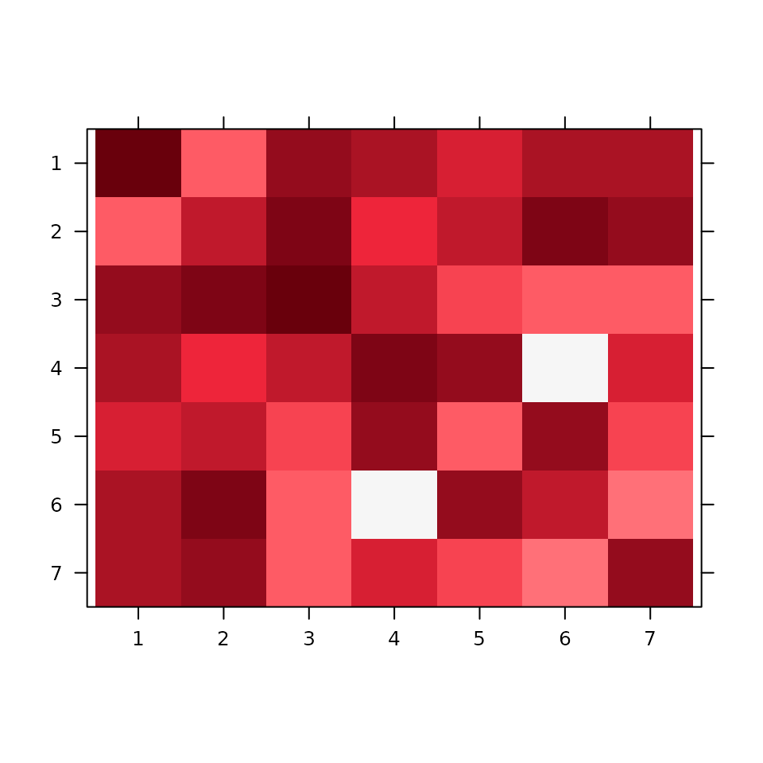
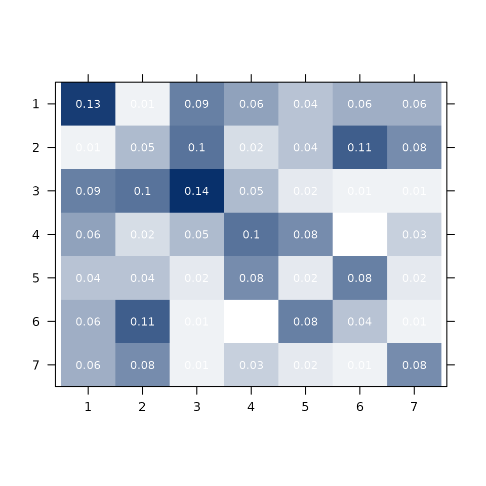
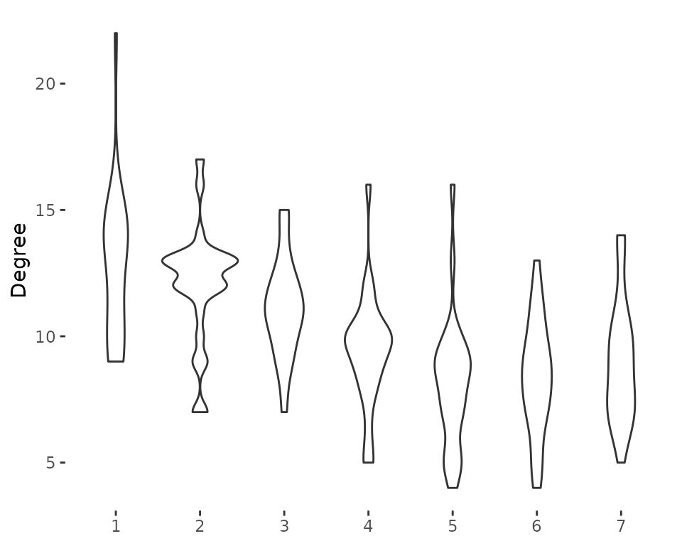
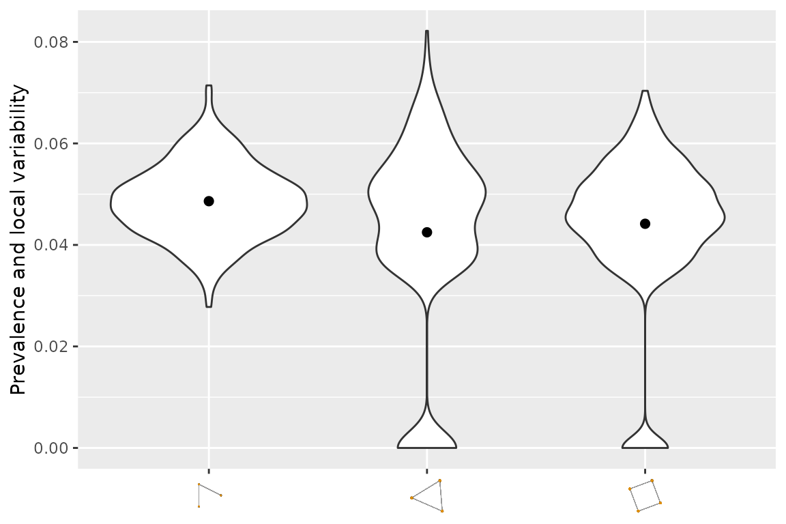

Introduction to nethist
example.RmdOverview
The nethist package estimates network histograms for single-layer and multiplex (multi-layer) networks. A network histogram partitions the nodes of a network into groups (bins) such that the connectivity pattern between groups approximates the underlying graphon — the generative probability function of the network. This provides a non-parametric, interpretable summary of large network structure.
The package implements the methods from:
- Single-layer: Olhede & Wolfe (2014). Network Histograms and Universality of Blockmodel Approximation. PNAS, 111(41).
- Multi-layer: Song & Olhede (2026). Joint Estimation of Sparse Multilayer Networks via Graph Limits. arXiv:2608.14536.
The package provides:
| Function | Description |
|---|---|
nethist() |
Network histogram for a single-layer network |
multinethist() |
Network histogram for a multiplex network |
plot() |
Heatmap of the estimated histogram |
plot3d() |
3D histogram plot for multiplex networks |
summary_plot() |
Covariate distribution by estimated bin |
violin_netsummary() |
Topology summary via subgraph prevalence |
Single-Layer Network Histogram
Estimating the histogram
nethist() accepts an adjacency matrix, a sparse
dgCMatrix, or an igraph object. The bandwidth
parameter h (number of bins) is selected automatically if
not specified.
set.seed(42)
data(polblog)
# Automatic bandwidth selection
nethist_polblog <- nethist(polblog)
print(nethist_polblog)The result is a nethist object with the following
components:
-
cluster: a vector assigning each node to a bin (integer labels 1 to k) -
thetahat: a k × k matrix of estimated connection probabilities between bins -
rho_hat: estimated overall network density -
normalized_LL: normalized profile log-likelihood at the solution
For a quick example with a synthetic network:
set.seed(2024)
A_gnp <- igraph::sample_gnp(200, 0.05)
result <- nethist(A_gnp)
print(result)
#>
#> thetahat:
#> [,1] [,2] [,3] [,4] [,5] [,6]
#> [1,] 0.13230769 0.01331361 0.08875740 0.06213018 0.04142012 0.05621302
#> [2,] 0.01331361 0.04923077 0.09615385 0.02366864 0.04289941 0.10798817
#> [3,] 0.08875740 0.09615385 0.14461538 0.04733728 0.01775148 0.01479290
#> [4,] 0.06213018 0.02366864 0.04733728 0.09846154 0.07840237 0.00000000
#> [5,] 0.04142012 0.04289941 0.01775148 0.07840237 0.01538462 0.08431953
#> [6,] 0.05621302 0.10798817 0.01479290 0.00000000 0.08431953 0.04307692
#> [7,] 0.05856643 0.07867133 0.01398601 0.03234266 0.02010490 0.01048951
#> [,7]
#> [1,] 0.05856643
#> [2,] 0.07867133
#> [3,] 0.01398601
#> [4,] 0.03234266
#> [5,] 0.02010490
#> [6,] 0.01048951
#> [7,] 0.07928118
#>
#> Method: Profile Likelihood
#>
#> normalized likelihood:
#> -3.70248405576056
#>
#> Available components:
#>
#> [1] "cluster" "thetahat" "rho_hat" "normalized_LL"
#> [5] "MSE" "method" "h"Visualising the histogram
plot() draws a heatmap of the estimated connection
probabilities. Bins are shown in the order of their label by default;
you can supply a custom permutation via idx_order.
plot(result)
To display the estimated probability values on each bin:
plot(result, type = "prob", prob = TRUE,
col.regions = colorRampPalette(c("#FFFFFF", "#08306B"))(50))
Multiplex Network Histogram
A multiplex network is a collection of networks defined on the same node set, each representing a different type of relationship (layer).
Estimating the histogram
multinethist() accepts a three-dimensional adjacency
array of size n × n × L, where L is the number of layers, or a list of
igraph objects.
set.seed(42)
data(IndianVil)
# IndianVil is a 231 x 231 x 12 adjacency array
# representing 12 socioeconomic relationship types in an Indian village
mnethist_result <- multinethist(IndianVil)
print(mnethist_result)The common_f argument controls whether a common
histogram function is assumed across layers:
# Heterogeneous histogram (default): each layer has its own density
mnethist_het <- multinethist(IndianVil, common_f = FALSE)
# Homogeneous histogram: shared structure, layer-specific density
mnethist_hom <- multinethist(IndianVil, common_f = TRUE)For a fast illustrative example using synthetic data:
set.seed(2024)
# Build a small 2-layer network
A1 <- igraph::as_adjacency_matrix(igraph::sample_gnp(80, 0.10), sparse = FALSE)
A2 <- igraph::as_adjacency_matrix(igraph::sample_gnp(80, 0.05), sparse = FALSE)
A_multi <- array(c(A1, A2), dim = c(80, 80, 2))
mn_result <- multinethist(A_multi)
print(mn_result)
#>
#> Theta_hat:
#> , , 1
#>
#> [,1] [,2] [,3] [,4] [,5]
#> [1,] 0.15384615 0.15816327 0.03571429 0.14285714 0.14880952
#> [2,] 0.15816327 0.15384615 0.16836735 0.03571429 0.09226190
#> [3,] 0.03571429 0.16836735 0.03296703 0.12755102 0.10119048
#> [4,] 0.14285714 0.03571429 0.12755102 0.00000000 0.12202381
#> [5,] 0.14880952 0.09226190 0.10119048 0.12202381 0.01811594
#>
#> , , 2
#>
#> [,1] [,2] [,3] [,4] [,5]
#> [1,] 0.021978022 0.122448980 0.08163265 0.025510204 0.005952381
#> [2,] 0.122448980 0.109890110 0.00000000 0.005102041 0.029761905
#> [3,] 0.081632653 0.000000000 0.02197802 0.056122449 0.077380952
#> [4,] 0.025510204 0.005102041 0.05612245 0.098901099 0.065476190
#> [5,] 0.005952381 0.029761905 0.07738095 0.065476190 0.050724638
#>
#>
#> Method: Profile Likelihood
#>
#> normalized likelihood:
#> -3.25258572523459
#>
#> Available components:
#>
#> [1] "cluster" "thetahat" "rho_hat" "normalized_LL"
#> [5] "MSE" "method" "homogeneous" "h"2D heatmap
plot(mn_result)Covariate Summary by Bin
Once nodes are assigned to bins, it is often informative to examine
how an external covariate is distributed across bins.
summary_plot() produces:
- a stacked bar chart for a
factorcovariate - a violin plot for a
numericcovariate
Factor covariate (political affiliation)
The polblog network is a hyperlink network among US
political blogs. Nodes are labelled as Liberal or Conservative.
set.seed(42)
data(polblog)
nethist_polblog <- nethist(polblog)
political_label <- factor(
c(rep("Liberal", 586), rep("Conservative", 638))
)
summary_plot(nethist_polblog, covariate = political_label,
legend_title = "Political affiliation")The bins with high within-group homogeneity will appear nearly solid in one colour, suggesting that the network histogram has recovered politically coherent communities.
Numeric covariate
set.seed(2024)
A_gnp <- igraph::sample_gnp(200, 0.05)
result <- nethist(A_gnp)
# Node degree as a numeric covariate
node_degree <- igraph::degree(A_gnp)
summary_plot(result, covariate = node_degree, ylab = "Degree")
#> Warning in summary_plot(result, covariate = node_degree, ylab = "Degree"): 'summary_plot' is deprecated.
#> Use 'covariate_plot' instead.
#> See help("Deprecated")
Network Topology Summary
violin_netsummary() implements the network summary
statistic of Maugis et al. (2017). It estimates the prevalence of small
subgraph patterns (v-shapes, triangles, squares, …) via vertex
subsampling, and draws a violin plot.
This is useful for comparing the topology of an estimated histogram against the original network, or for comparing networks from different studies.
set.seed(2024)
A_gnp <- igraph::sample_gnp(400, 0.05)
violin_netsummary(A_gnp)
#> Warning in violin_netsummary(A_gnp): 'violin_netsummary' is deprecated.
#> Use 'netsummary_plot' instead.
#> See help("Deprecated")
#> Use n_rep = 574
The y-axis shows the prevalence (proportion of sampled subgraphs of that type), and the width of each violin reflects variability across subsamples. A roughly flat distribution indicates an Erdős–Rényi-like structure; peaked distributions suggest community or degree-heterogeneous structure.
Supported Input Types
All main functions accept three input formats:
| Format | Class | Example |
|---|---|---|
| Dense adjacency matrix | matrix |
igraph::as_adjacency_matrix(g, sparse = FALSE) |
| Sparse adjacency matrix | dgCMatrix |
igraph::as_adjacency_matrix(g) |
| igraph object | igraph |
igraph::sample_gnp(200, 0.05) |
For multinethist(), the input can also be a 3D
array of size n × n × L.
References
Banerjee, A., Chandrasekhar, A. G., Duflo, E., & Jackson, M. O. (2013). The diffusion of microfinance. Science, 341(6144), 1236498.
Gao, C., Lu, Y., & Zhou, H. H. (2015). Rate-optimal graphon estimation. The Annals of Statistics, 43(6), 2624–2652.
Maugis, P.-A. G., Priebe, C. E., Olhede, S. C., & Wolfe, P. J. (2017). Topology reveals universal features for network comparison. arXiv:1705.05677.
Olhede, S. C. & Wolfe, P. J. (2014). Network histograms and universality of blockmodel approximation. Proceedings of the National Academy of Sciences, 111(41), 14722–14727.
Song, Y. & Olhede, S. C. (2026). Joint Estimation of Sparse Multilayer Networks via Graph Limits. arXiv:2608.14536.